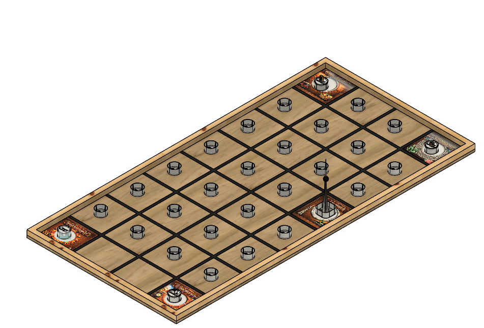

01
Official rules
Competition rules, field requirements, scoring, random-mission procedure, and Engineering Exhibition criteria.
2027 ASEE Model Design Competition
Toronto, Ontario, Canada · Monday, June 21, 2027
Official release
Download the official rules to begin preparing for the 2027 Toronto Food Run. Supporting fabrication and field resources will be posted here as they are released.
Competition rules
Teams have four 120-second trials to deliver four food items to randomly assigned addresses and complete the poutine delivery at the CN Tower Bowl.

01
Competition rules, field requirements, scoring, random-mission procedure, and Engineering Exhibition criteria.
02
Download individual printable game components or a complete STL bundle.
03
Official supporting materials for the field and random missions.
Individual downloads
Download only the component you need. The complete ZIP bundle remains available for teams that prefer one download.
Rules questions
Submit questions before the competition through the official communication channel. During the event, the Head Judge interprets the rules and resolves scoring questions.